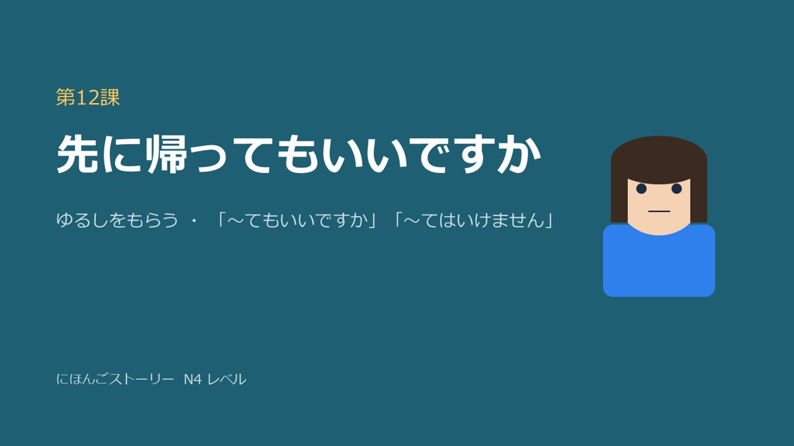
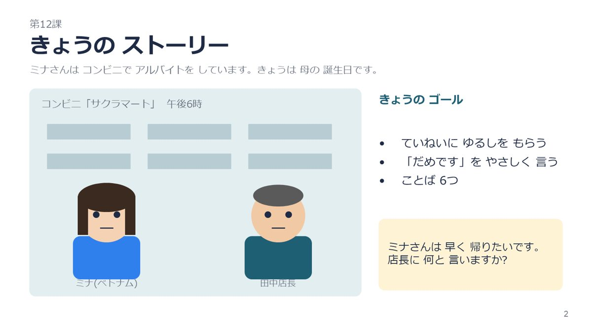
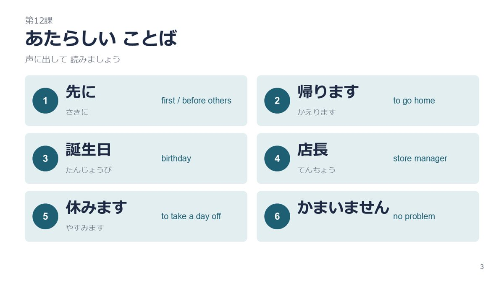
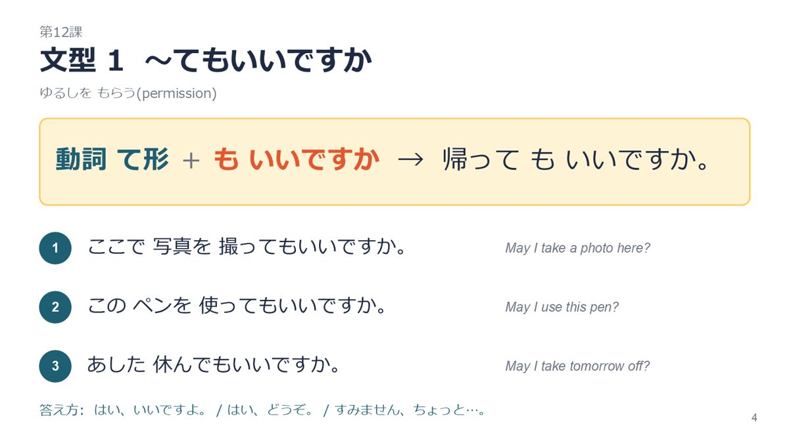
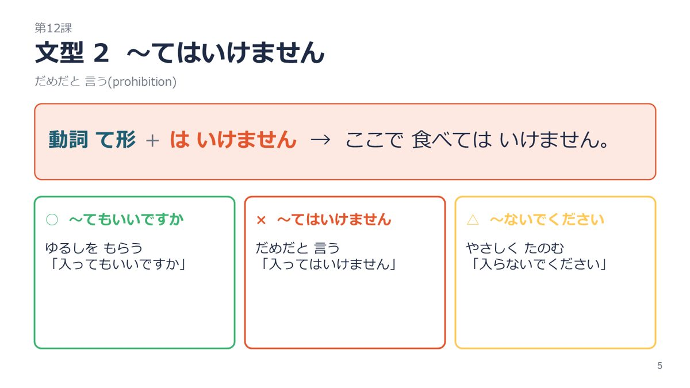
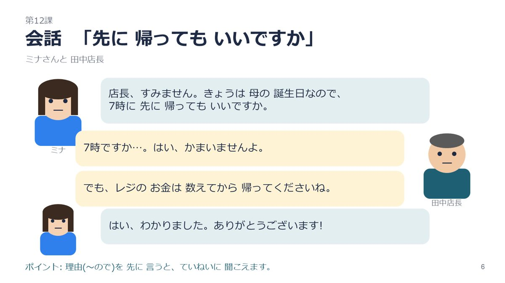
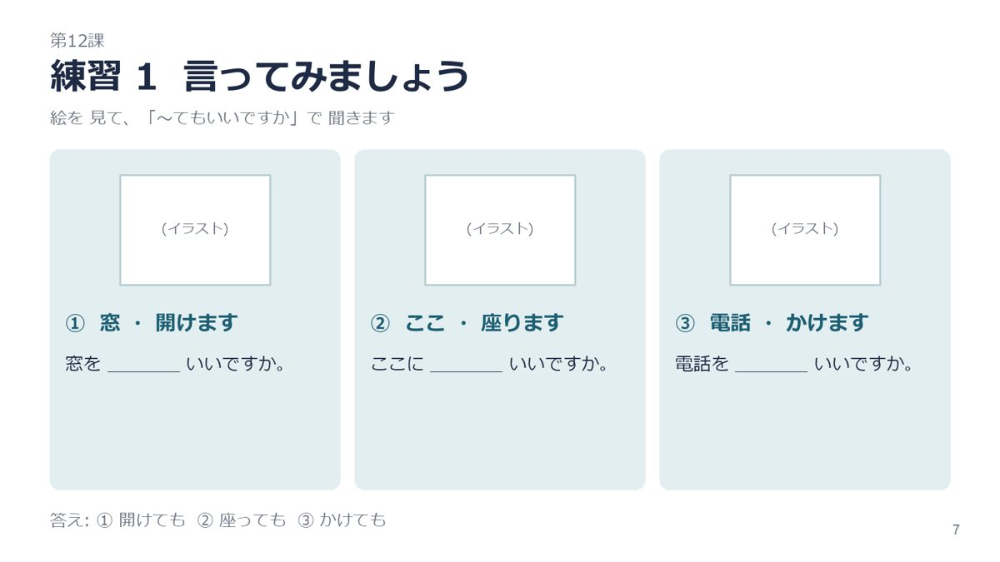
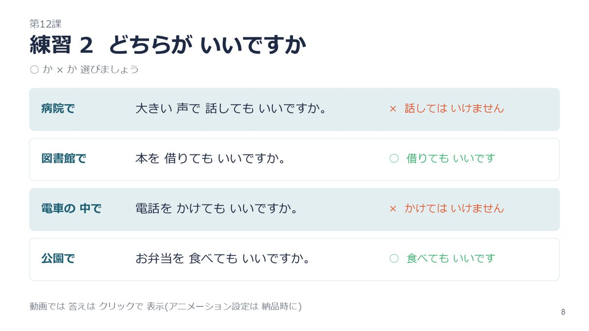
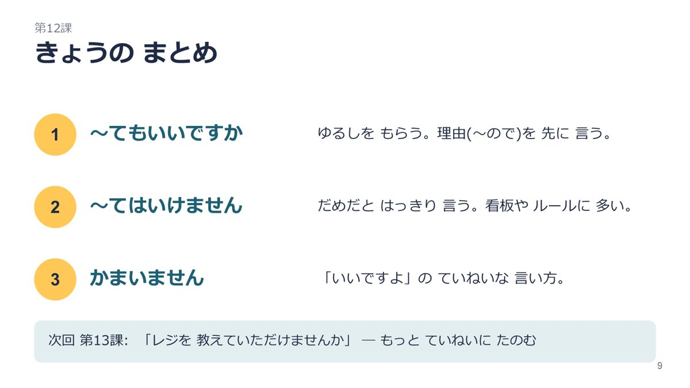
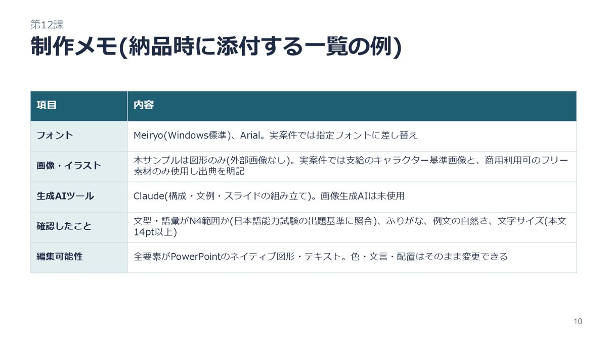

日本語学習動画用スライド サンプル
ストーリー(コンビニで働くミナさんと店長)→ 新しいことば → 文型1 → 文型2 → 会話 → 練習1 → 練習2 → まとめ → 制作メモ、の構成です。 キャラクターと場面は図形だけで描いています(外部画像は不使用)。実際の制作では、支給いただくキャラクター基準画像・テンプレート・配色ルールに差し替えます。
PPTXをダウンロード(編集できます)








